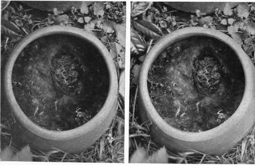

Chapter XII. Some Curious Nesting Places
Description
This section is from the book "Nature Photography For Beginners", by E. J. Bedford. Also available from Amazon: Nature Photography for Beginners.
Chapter XII. Some Curious Nesting Places
I propose to devote this chapter to the description of a few curious nesting places which have come under my notice from time to time. Some of the examples given are also illustrated.
The Robin can easily take first place in the great variety of situations in which the nest has been found. Numbers of instances have come under my notice of the nest being built in some old tin on the ground or in a can or old pot placed in a tree; in an old shoe; in a church porch; in a flower-pot or basket in the greenhouse or potting-shed, etc. Figs. 56 and 57 show the site and nearer view of a Robin's nest built in an old cupboard hanging on the wall of the boiler-room in the basement of the Town Hall, Eastbourne. Two consecutive broods were brought up in the same nest during the season, the parent birds entering and leaving the room through a window which was left open for their convenience. The nest was discovered quite accidentally by a workman who was searching for something which had been mislaid. He was about to place his hand in the cupboard when the sitting bird flew out, much to his surprise. Another instance of the Robin's familiarity with human beings is given in the next example, which occurred in the elementary school at Crawley Down, Sussex. The Robin, which had been fed by the children during their luncheon hour, became so tame that it often entered the school during lesson time, and would sit on one of the tie rods running across the room and sing to the children, much to their delight. Some time after the schoolmaster continually noticed dead leaves about the floor, and endeavoured to find out who was bringing them in, but without success. By and by, however, he discovered it was the Robin, which was building its nest in the folds of a curtain thrown up over one of the tie-rods. The nest was left undisturbed and the young birds were hatched out successfully. Fig. 58 shows the curtain in the schoolroom with the temporary platform erected for the camera, and Fig. 59 a view of the nest, which at the time the photograph was taken contained six young birds ready to fly. After the brood had flown the same Robin built again in the school library amongst the books, as shown in Fig. 60, and more curious still a third nest was constructed in another curtain folded up in a similar way to the other. The existence of this nest, however, was not known, until the curtain was taken down, when the nest and eggs fell out. The fact of three nests being built by the same bird in the same schoolroom during the same season and while the children were there day after day is, I think, rather remarkable.

Fig. 56. Robins Nest in Old Cupboard (site).
Fig. 57. Robins Nest and Eggs, in Old Cupboard shown in Fig. 56.
Fig. 58. Robin's Nest in Curtain in Schoolroom (site).
Fig. 59. Robin's Nest in Curtain in Schoolroom. (Photograph taken from the Platform shown in Fig. 58).
Fig. 60. Robins Nest in Bookcase in Schoolroom.
One day a person went to attend to some flowers on a grave and was startled by seeing something escape which she took to be a Mouse. Further search revealed a Robin's nest built under the wreath, and at the time the photograph was taken the young birds were just hatching out. While engaged in taking the photographs of this nest, I saw in the cemetery-keeper's garden near some young Thrushes in a cage, and while I stood watching them the parent bird came several times and fed them through the wires of the cage, and I afterwards obtained a photograph of it doing so, Fig. 62.
Fig. 62. Song Thrush Feeding Young in Cage.
The old hat containing a Robin's nest, shown in Fig. 65, was hung up on the door of a shed at a railway station by a man when leaving work at midday on a certain occasion. The next time he went, intending to use the hat, he found the nest partially built in it and, I am glad to say, did not disturb it, but obtained another hat and left the birds eventually to hatch out their brood safely.
Fig. 65. Robins Nest in Hat.
A Robin commenced to build its nest by the side of the clock on a mantelshelf of a drawing-room. Owing to the litter, etc., caused by the bird the nest was cleared away, but another was soon commenced, and on this meeting with a similar fate to the first a third one was started. This was also cleared away, and the window of the room was then kept closed to prevent the bird entering again.
Next to the Robin, perhaps the Great Tit is one of the birds most likely to choose an odd situation for its nest. In the example illustrated (Figs. 63, 64) the nest was built in an old rhubarb-pot which had a piece broken off the lid. The birds entered and left the nest through the hole thus formed. When the photograph was taken there were nine young birds ready to fly and two dead ones in the nest. The amount of material comprising the nest measured eleven inches in diameter and was five inches high. On several occasions two nests of the Great Tit have been found in the same pot. Another nest of this species was built on the top of a Bee-hive. On account of the hot weather at the time, the small cap at the top of the hive cover had been removed for the purpose of allowing extra ventilation, and the hole thus left allowed the birds to make use of it for the purposes of entry and exit. This same hive also contained a Mouse's nest. When these nests were discovered they were both abstracted by the owner of the hive, who not unnaturally considered both Tits and Mice undesirable tenants, and no doubt this action gave considerable satisfaction to the rightful owners of the hive. The Great Tit is also fond of building its nest in the letter-box on the garden gate of a country house. One remarkable instance of a case of this kind, from the village of Rowfant, Sussex, is shown in the Natural History Museum at South Kensington, several nests built in successive seasons by apparently the same birds being exhibited. The letter-box on the garden gate of the schoolmaster's house at Crawley Down—where the Robin's nests already referred to were built in the schoolroom—contained a Great Tit's nest. After I had obtained a photograph of the bird on the nest by opening the door of the box at the back, she had to be lifted off the eggs before I could obtain another photograph showing them in the nest.
Fig. 63. Great Tits Nest in Pot (site).
Fig. 64. Great Tits Nest in Pot (lid removed).
Fig. 75. Young Cuckoo 14 days old.
Fig. 76. Empty Nest of Sedge Warbler after young Cuckoo had flown.
Continue to:
- prev: Birds And Their Nests And Eggs. Part 18
- Table of Contents
- next: Some Curious Nesting Places. Continued
Tags
nature, photography, art, birds, camera